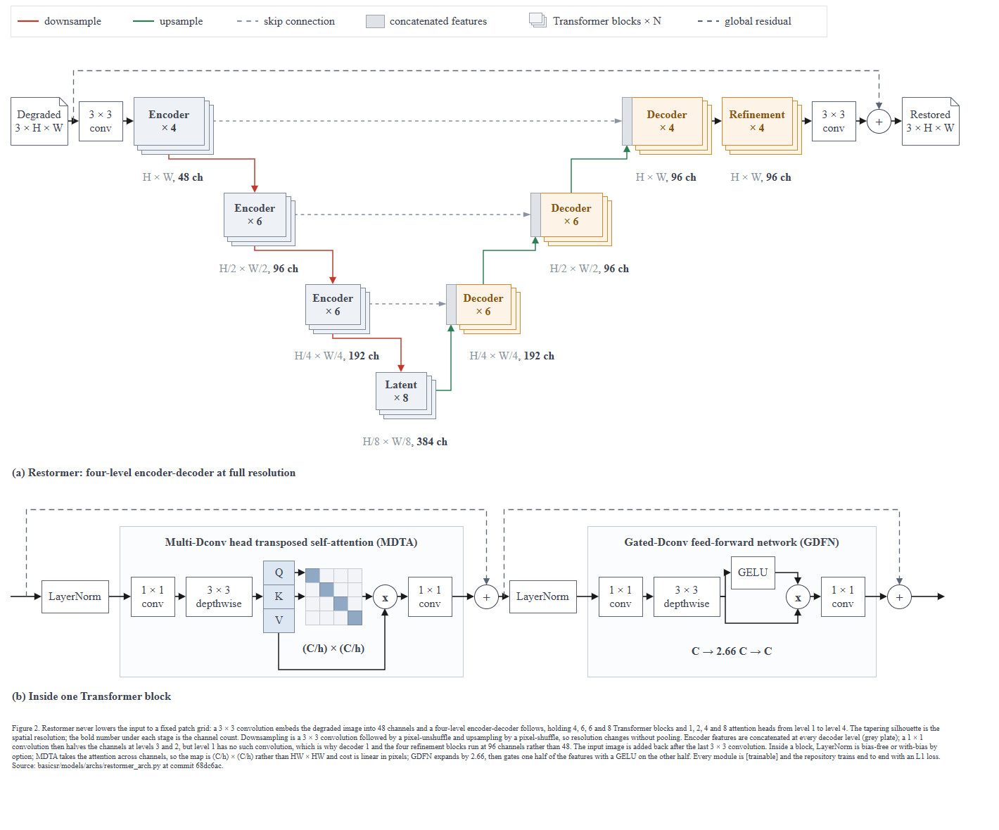
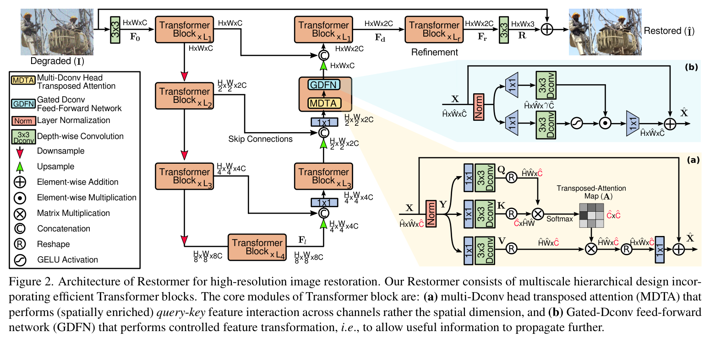

← 전체 목록 · T1M-3 · T1-M
Restormer — 이미지 복원
스킬 개발에 사용하지 않은 저장소이다. 저장소 코드만 입력으로 사용하였고, 정답지는 실행 종료 후 대조 목적으로만 열었다.
블라인드 조건
- 정답지는 논문 Figure 2이다. 저장소
README.md가 네트워크 구조도를 imgur 외부 링크로 걸어두고 arXiv 도 링크한다. - 리포트 기록:
The README links a network-architecture image on imgur and the arXiv paper; neither was fetched.
쓴 README 내용은 저장소 파일 안에 있는 초록 문단 한 개뿐이고, 그것도 주장 문구 확인용이다. rev-parse --show-toplevel이 대상 폴더와 일치하는 것을 확인하고 캡션에68dc6ac를 넣었다.- 이 케이스는 실제 샘플 이미지(
demo/degraded/couple.jpg→ 복원본)가 저장소에 들어 있다. 사용 여부를 직접 판단해야 한다.
프롬프트
Scout 신규 세션에 아래 내용만 입력하였다. 무엇을 그릴지는 지정하지 않았다.
/method-figure
C:\Users\youngseolee\OneDrive - Microsoft\Desktop\work\code\paper-trail\eval\demo\repos\restormer
이 저장소를 읽고 논문 Figure 2 자리에 들어갈 방법론 그림을 만들어줘.
지켜야 할 것:
- 이 저장소의 코드에서만 읽는다. 이 방법의 논문이나 저자 그림, 저장소
README 가 링크한 외부 이미지를 찾아보지 않는다. 무엇을 그릴지는 코드가
정한다.
- 산출물은 전부 이 폴더에 쓴다:
C:\Users\youngseolee\OneDrive - Microsoft\Desktop\work\code\paper-trail\out\demo\restormer\run\
figure.drawio, fig.html, report.md,
evidence.json (evidence.py 가 뽑은 재료 원문),
render.png (최종 그림을 렌더한 PNG),
render-r1.png (독립 시각 게이트를 처음 통과시키기 전 시점의 렌더).
게이트가 한 번에 통과하면 render-r1.png 는 만들지 않아도 된다.
- report.md 에는 돌린 검사의 stdout 을 그대로 붙이고, 게이트마다 통과/실패와
몇 라운드 만에 통과했는지 적는다. 스킬에서 모호했거나 따를 수 없었던 것도
적는다.
실행 경과
캡처 프레임 144장 중 8장을 선별하였다. 좌우 방향키로 이동한다.
게이트 4종 결과
| 게이트 | 결과 | 라운드 | 검출 내용 |
|---|---|---|---|
| ① 렌더 | PASS | 1 | XML 파싱 + 뷰어 기동 (전용 포트 8917) |
② check_layout.py | ok (엣지 라벨 0) | 4 | 1라운드 플래그 30건: 라벨 넘침 28건, 화살표 z-order 1건. 4라운드에 ok |
③ check_render.js | flags: [] | 3 | 1라운드 6건 → 2라운드 2건 → 3라운드 0건. 그중 2건은 검사기 아티팩트였고 DOM 을 조사하여 확인하였다 |
| ③-b 육안 자기점검 | 변경 1건 | 1 | 범례의 'Transformer blocks' 견본이 주황 상자 한 개여서 색을 잘못 표기하고 있었다 |
| ④ 독립 시각 게이트 | GATE: PASS | 1 / 3 | 1라운드에 통과하였다. 따라서 render-r1.png 는 생성하지 않았다 |
심사자에게는 렌더 PNG 와 검사 원문만 제공하고 보고서·의도·단계 분해는 제공하지 않는다. 자체 점검 항목을 44개까지 확대해도 통과율이 개선되지 않아, 점검 항목이 아니라 판정 주체를 분리하는 방식으로 변경하였다.
최종 산출물
산출물은 이미지가 아니라 draw.io XML 이다. 확대·이동이 가능하며 내려받아 수정할 수 있다.
figure.drawio · report.md · 뷰어 새 창
정답지 대조


| 항목 | 정답지 | 산출물 | 비고 |
|---|---|---|---|
| 전체 골격 | 4단 U자 + 스킵, 오른쪽에 (a)(b) 인셋 | 4단 U자 + 스킵, 아래에 (b) 인셋 | 위상은 같다. 인셋 위치는 가독성 폭 때문에 아래에 두었다 |
| 해상도·채널 | H×W×C, H/2×W/2×2C … 기호로 | H × W, 48 ch … 실수로 | dim: 48 등 저장소 option 파일 기본값을 그대로 읽어 넣었다 |
| 반복 | × L₁ … × L₄ 기호 | 겹친 판 + × 4 / × 6 / × 6 / × 8 | num_blocks: [4,6,6,8] 기본값. 접었고 범례에 접기 표기를 넣었다 |
| 스킵 | ⓒ 원 기호 + 'Skip Connections' 글자 | 가로 점선 + 회색 판(concat), 같은 해상도끼리 수평 정렬 | 원 기호를 새로 만들지 않고 판 도형으로 처리하였다 |
| 블록 내부 | (a) MDTA (b) GDFN 두 인셋, 색 채움 | (b) 안에 MDTA·GDFN 두 하위 패널, (C/h) × (C/h) 명시 | 어텐션이 채널 축이라 HW×HW 가 아니라는 점이 이 논문의 핵심이다 |
| 기호 범례 | 왼쪽에 큰 범례 박스 (11항목, ⊕ ⊙ ⊗ ⓒ Ⓡ) | 위쪽 띠 6항목, 특수기호는 +·x 만 | 스킬이 ⊕ ⊗ ⊙ ⊘ 를 금지한다. 대신 원 안의 +/x |
| 샘플 이미지 | 실제 사진 before/after | 없음 (3 × H × W 노트 카드) | 저장소에 있는데도 사용하지 않았다. 이유는 리포트 §4-5 |
| 종횡비 | 가로로 넓은 2단 폭 그림 | 1348 × 1104, 1.22:1 | 가독성 바닥값이 폭을 묶어서 패널이 세로로 쌓였다 |